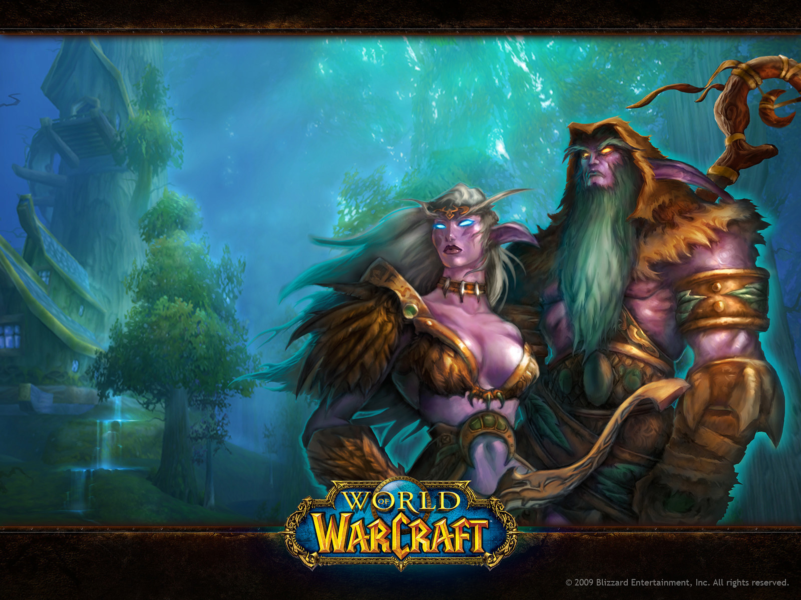

Maplestory and FreeToPlay MMORPGs

My first MMORPG. When I was a kid my family didn't own a gaming PC, so I resorted to playing more low intensive games. Before Maplestory I played a countless amount of free-to-play(F2P) MMORPGs that were usually less graphically intensive than things like World of Warcraft. I liked Maplestory due to the cute anime like visuals and side scrolling combat. The social aspect of Maplestory was my favorite aspect, as most people playing the game were anime fans and around my age. Though I didn't achieve much in MS, I did have a lot of fun hanging around with other players in the main and high level towns. A few notable examples of other F2P games I played around this time were Runescape, Silkroad, and Rakion.
World of Warcraft
Finally, a true MMORPG experience. Around the age of 12 my parents let me go with them to pick out our new family computer. I made sure it'd meet the system requirements to run World of Warcraft. Around this time the first 'Expansion' for the game was released, named "The Burning Crusade." I played this game so much that my parents began to worry about me, regardless, I managed to make it to the highest level and even ran a guild (Guilds are a MMORPG mainstay, they're basically a ingame group of players, like a club.) that completed endgame content.
Aion

As I got farther into World of Warcraft, I ended up not enjoying how the game had been progressing, and found myself resorting back to Korean made MMORPGs. Aion was a game that was made by the same company who created Maplestory, however, it was a fully 3D MMORPG with impressive graphics. Alongside that, it also boasted a impressive flying mechanic in which all players were able to grow wings and take flight throughout the world. Aion focused more on 'Player Versus Player' content, which was my favorite content in World of Warcraft. I eventually became proficient at the flight based PvP and would consistently compete in server wide battles with my guild, which was my first queer group of friends I had and maintained. I'm still friends with some of them outside of the game.
Phantasy Star Universe

While playing World of Warcraft, I was curious to see how a MMORPG would play on a console versus a PC. I had played the demo for Phantasy Star Universe, and eventually convinced my mom to buy it for me when I was in middle school. I was still playing World of Warcraft, but the MMORPG infection had spread so far I couldn't help myself. PSU was made by one of my favorite game companies, Sega's Sonic Team. The gameplay was different from World of Warcraft and Aion, featuring more of an arcade like, action based combat system. The world wasn't open ended like WoW or Aion though, as it featured 'instance based' (players enter a combat field alone or with a party) style of MMORPG, where in town you see players running about and enjoying the game, however, once you left the town for the combat field you're on your own unless you brought a party with you. I still play this game today!
Final Fantasy XIV

Finally, we're caught up to present day. I've played this game for over 5 years consistently now, and can confidently say it is my favorite MMORPG of all time. It being from one of my favorite series of games, Final Fantasy doesn't hurt either. There's too many accomplishments to count for FFXIV, however, I will say that I've completed almost all of the content the game has to offer. Everything I've done or exceled at in previous MMORPGs I've done the same here. Whether it's running a guild with my friends, competing in PvP, running endgame raids, or hanging out with my girlfriend (pictured), I've done all of that in more in the world of Eorzea.